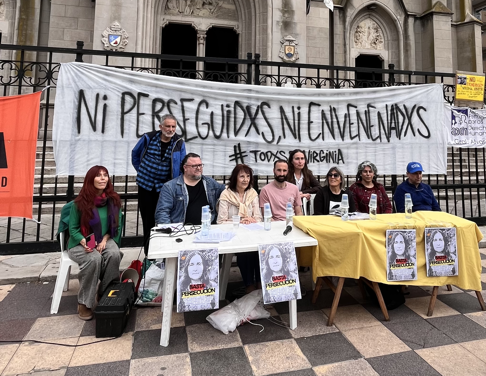

El martes 6 de octubre de 2026, en la ciudad de Mar del Plata, científicos, organizaciones ambientales y vecinales, representantes de universidades, asociaciones de jubilados y de productores se concentraron en las puertas de la Catedral para llevar adelante una jornada de lucha en defensa de la Dra. Virginia Aparicio, ingeniera agrónoma del INTA e investigadora del CONICET, quien lideró el Proyecto SPRINT en Argentina y hoy enfrenta un intento de exoneración por parte del Consejo Directivo del INTA.
La conferencia de prensa contó con la lectura pública de los resultados del Proyecto SPRINT, el estudio internacional sobre presencia y exposición a plaguicidas más importante realizado en el país, cuyos datos fueron censurados en 2023 tras la salida del INTA del proyecto y por el que actualmente la Dra. Aparicio enfrenta un pedido de exoneración.
Estuvieron presentes: La Naranja Ciencia y Técnica, APINTA, Vecinxs por la Agroecología, Paren de Fumigar, Asamblea Luna Roja, EcoAsamblea Parque Camet, Surfrider, AVATAR - Reserva Puerto, Asamblea por los Bienes Comunes Chapadmalal, Mar Libre de Petroleras, Facultad de Cs de la Salud y Trabajo Social UNMDP, Plenario de Trabajadoras, Tribuna de Salud, CEGCEN - Conducción EPI, Facultad de Humanidades UNMDP, MDP Ciudad de Todos, Foro Ambiental Balcarce, Asamblea Multisectorial de Jubilados de Gral. Alvarado, Plenario de Trabajadorxs Jubiladxs Mar del Plata, APDH de General Alvarado, Proyecto radial La Rueda, Resonar Semejante, Centro de jubilados de ADUM y Mapa Extractivista.

Qué fue SPRINT y cómo participó Argentina
SPRINT fue un proyecto financiado por la Unión Europea para estudiar la presencia y la exposición a plaguicidas, con especial atención a las mezclas, desde una perspectiva de Salud Global: ambiente, plantas, animales y personas.
Argentina fue el único sitio de estudio de SPRINT fuera de Europa. En nuestro país, el proyecto se ejecutó institucionalmente a través del Instituto Nacional de Tecnología Agropecuaria (INTA), y el trabajo se desarrolló en el sudeste de la provincia de Buenos Aires. La Dra. Virginia Carolina Aparicio, investigadora de la EEA INTA Balcarce, fue responsable del sitio de estudio SPRINT en Argentina.
En la campaña de biomonitoreo argentino participaron 73 personas adultas: productores de sistemas convencionales y agroecológicos, residentes rurales que no trabajaban profesionalmente en agricultura y consumidores urbanos. Esta diversidad fue intencional y alcanzó un total de 742 en todo el proyecto. El proyecto no quiso estudiar solamente a quienes aplicaban plaguicidas, sino también conocer qué ocurría en otras personas que compartían el territorio y el sistema alimentario.
SPRINT tuvo un protocolo científico común para los once sitios. Definió cómo seleccionar participantes, qué muestras tomar, cómo conservarlas y trasladarlas y cómo asegurar la calidad y comparabilidad de los datos. La participación de personas tuvo además aprobación ética. Cada voluntario recibió información antes de decidir si participaba, otorgó su consentimiento informado y sus datos fueron protegidos. En Argentina, ese vínculo con los voluntarios se desarrolló bajo la responsabilidad de la investigadora principal del sitio.
Se estudiaron sangre, orina y materia fecal. Los participantes utilizaron también pulseras de silicona durante siete días para registrar exposición externa. En una parte del estudio se recogió una porción equivalente de todo lo comido y bebido durante 24 horas. Al mismo tiempo se estudiaron suelo, agua, sedimentos, cultivos, polvo del interior de viviendas, animales y alimento animal.
Las pulseras: siete días de exposición cotidiana
Las pulseras de silicona se utilizaron durante siete días para estudiar una parte de la exposición externa cotidiana. La misma estrategia se aplicó en Europa y en Argentina.
El estudio europeo, ya publicado, incluyó 641 participantes de diez países y analizó 193 plaguicidas. Se detectaron 173 sustancias en el conjunto de las pulseras. La mediana fue de 36 sustancias en productores convencionales, 20 en productores orgánicos, 20 en vecinos de áreas agrícolas y 17 en consumidores. Una mezcla de permethrin, chlorpyrifos, DDE p,p' y butóxido de piperonilo apareció en el 72 % de las pulseras. Los autores señalan que todavía no está claro qué significa esa mezcla frecuente en términos de riesgo acumulativo.
En Argentina se analizaron los mismos 193 compuestos. En las 73 pulseras argentinas se detectaron, en conjunto, 80 principios activos. Entre los más frecuentes estuvieron atrazina, un herbicida; fungicidas como azoxistrobina, propiconazol y trifloxistrobina; insecticidas como fipronil e imidacloprid; y butóxido de piperonilo, un sinergista.
También aparecieron diferencias entre sistemas productivos. Entre los productores argentinos, la carga mediana registrada en el sistema convencional fue aproximadamente cuatro veces mayor que en el agroecológico: 447,2 frente a 113,1 nanogramos por gramo de pulsera. La complejidad de las mezclas también fue mayor entre los productores convencionales. Sin embargo, residentes rurales y consumidores urbanos también presentaron mezclas.
Los números europeos no son números argentinos y no deben confundirse. Pero ambos estudios muestran que las mezclas no se restringen a quienes aplican plaguicidas y que los sistemas convencionales pueden asociarse con exposiciones mayores. Estas pulseras no capturan adecuadamente sustancias muy polares como glifosato y AMPA; por eso SPRINT utilizó otras matrices para estudiar esos productos químicos.
El polvo de los hogares: un resultado argentino especialmente importante
Uno de los resultados publicados más claros para comprender la exposición no ocupacional provino del polvo del interior de las viviendas.
En 48 viviendas no agrícolas del sudeste de la provincia de Buenos Aires se buscaron 49 plaguicidas y compuestos relacionados. Se detectaron 41 y cinco compuestos estuvieron presentes en todas las muestras: glifosato y atrazina, herbicidas; carbaryl e imidacloprid, insecticidas; y butóxido de piperonilo, un sinergista.
Este dato es importante porque no estamos hablando de viviendas de productores agropecuarios. El trabajo estudió hogares urbanos o no agrícolas. También mostró que dentro de una vivienda pueden coexistir distintas fuentes posibles: usos domésticos, productos veterinarios, jardinería, actividades laborales no agrícolas y aportes del ambiente exterior. El estudio no permite atribuir cada residuo a una única fuente, pero demuestra que la exposición residencial es compleja y merece ser investigada.
Este resultado se complementa con otro artículo de SPRINT sobre polvo de hogares vinculados a establecimientos agropecuarios convencionales y orgánicos de Europa y Argentina. En 128 viviendas se investigaron 198 residuos y se encontraron mezclas en todas las muestras: entre 25 y 121 residuos por hogar, con una mediana de 75 para el conjunto del estudio.
Entre los compuestos con mayores concentraciones estuvieron glifosato y AMPA, permethrin, cypermethrin y butóxido de piperonilo. Además, los hogares asociados a establecimientos orgánicos presentaron significativamente menos residuos y menores concentraciones totales e individuales que los asociados a establecimientos convencionales.
Esos números corresponden al conjunto de Europa y Argentina, no exclusivamente al caso argentino. Pero, leídos junto con el estudio de las 48 viviendas no agrícolas argentinas, muestran algo importante: el polvo doméstico permite observar exposición tanto en la ruralidad agrícola como fuera de ella, y en los hogares rurales el sistema productivo dejó una diferencia medible.
El agua
SPRINT estudió también pequeños cuerpos de agua de regiones agrícolas. En el estudio multicéntrico se investigaron 193 residuos en 64 cuerpos de agua de diez países europeos y Argentina. Se encontraron mezclas en todos los sitios estudiados, con una mediana de 20 residuos por muestra. Los herbicidas fueron el grupo dominante y glifosato presentó la mayor concentración mediana, seguido por 2,4-D y MCPA.
Entre los once sitios de estudio, el sitio argentino presentó la mayor concentración total de plaguicidas en los cuerpos de agua analizados. Esto describe esos sitios concretos y no significa que todas las aguas de Argentina tengan esas concentraciones.
Contamos además con una publicación argentina sobre agua subterránea destinada al consumo humano. Entre 2019 y 2022 se analizaron 154 muestras de abastecimientos públicos (agua de red) y privados (pozos) de la región pampeana. Entre los compuestos detectados con mayor frecuencia estuvieron atrazina, metolacloro, imidacloprid, hidroxiatrazina, imazetapir y 2,4-D. Este trabajo refuerza la necesidad de sostener programas de monitoreo de plaguicidas y productos de transformación en el agua destinada a beber.
Lo que encontramos en las personas, los alimentos y los animales
Las diferentes muestras humanas aportan información distinta. La sangre permite estudiar determinadas sustancias presentes en circulación. La orina permite estudiar sustancias que el organismo elimina y metabolitos o biomarcadores de exposición. La materia fecal aportó información especialmente novedosa para glifosato y AMPA.
En un trabajo publicado por SPRINT, glifosato fue detectado en el 100 % de las muestras de materia fecal humana del sitio argentino y en el 86 % de las muestras de orina correspondientes. La concentración mediana en materia fecal fue de 153 microgramos por kilogramo en Argentina, frente a 17,6 microgramos por kilogramo considerando en conjunto los sitios europeos. El mismo estudio encontró glifosato en la mayoría de las muestras fecales de animales de producción.
SPRINT estudió además la alimentación. En un estudio de siete países, incluida Argentina, 43 participantes recogieron durante 24 horas una porción duplicada de todo lo que comían y bebían. De 183 plaguicidas investigados, 86 fueron detectados en los alimentos del conjunto del estudio. Para 2,4-D y MCPA se observó relación entre lo ingerido y lo eliminado en orina. Para glifosato y AMPA esa relación no fue clara, lo que indica que la dieta no explicaba por sí sola toda la exposición. En ese estudio, el índice de peligro calculado bajo un supuesto de aditividad no superó la ingesta diaria admisible en ninguno de los participantes.
Qué nos dicen estos resultados
Cuando reunimos todas las matrices aparece una imagen más completa. Hay herbicidas, fungicidas, insecticidas, sinergistas y productos de transformación. Pero, sobre todo, aparecen mezclas.
Las mezclas aparecen en cuerpos de agua, en el polvo de viviendas, en las pulseras utilizadas durante una semana, en alimentos y en distintas muestras biológicas.
También vemos que el sistema productivo puede modificar la exposición: en las pulseras argentinas, los productores agroecológicos mostraron menor carga y menor complejidad de mezclas que los productores convencionales. Pero la presencia de residuos no quedó restringida a quienes aplicaban productos. También fue observada en residentes rurales, consumidores y hogares no agrícolas.
Detectar no significa demostrar enfermedad
Esta aclaración es fundamental. Encontrar un plaguicida, un metabolito o un biomarcador en una muestra demuestra presencia o exposición en las condiciones estudiadas. No demuestra, por sí solo, que esa sustancia haya causado una enfermedad en una persona.
Pero tampoco corresponde ignorar lo que los datos sí muestran: existen exposiciones a múltiples sustancias y algunas no se limitan al ámbito laboral. Por eso una de las preguntas centrales de SPRINT fue qué puede ocurrir cuando las sustancias actúan en combinación.
Qué estudió SPRINT sobre las mezclas
A partir de aquí ya no hablamos de efectos observados en los voluntarios argentinos, sino de estudios experimentales de SPRINT que buscaron responder una pregunta surgida del monitoreo: ¿qué ocurre cuando distintas sustancias actúan juntas?
El proyecto publicó ensayos en células, animales de laboratorio y organismos del ambiente. Bajo determinadas condiciones se observaron efectos de algunas mezclas; en otros ensayos no hubo efectos a las concentraciones ambientales medianas estudiadas. En varios casos, los efectos fueron aditivos.
Estos experimentos no deben trasladarse directamente a la salud de los voluntarios. Su valor es mostrar por qué necesitamos estudiar mezclas, dosis y exposiciones repetidas. Las publicaciones correspondientes están enlazadas al final para quien quiera profundizar.
Una herramienta pública que queda disponible
SPRINT desarrolló además una Caja de Herramientas de Evaluación de Riesgos (Toolbox) desde una perspectiva de Salud Global, disponible públicamente en internet.
La Toolbox permite explorar resultados de los once sitios, incluido Argentina, y reúne información ambiental, humana y animal sobre exposición y evaluación de riesgos.
Es parte del legado del proyecto: los resultados pueden seguir siendo consultados y utilizados para investigación, monitoreo y toma de decisiones.
Las palabras de los voluntarios
Este artículo se basa en la lectura pública realizada por los voluntarios del Proyecto SPRINT en la conferencia de prensa. Los datos específicamente argentinos se distinguen de los resultados multicéntricos. Los resultados experimentales no se presentan como efectos observados en los voluntarios. Detección y biomonitoreo se interpretan como evidencia de presencia o exposición, no como diagnóstico de enfermedad.
En la conferencia de prensa los voluntarios fueron muy claros:
"Nosotros no participamos de SPRINT para demostrar una conclusión previamente establecida. Participamos para producir conocimiento en una investigación colaborativa. En Argentina el proyecto se ejecutó a través del INTA. Hubo un protocolo científico, aprobación ética, consentimiento informado, voluntarios, equipos de trabajo, laboratorios especializados y un consorcio internacional. Entregamos muestras, usamos pulseras, respondimos cuestionarios y permitimos estudiar nuestros hogares y sistemas productivos. Después, la ciencia midió, comparó, analizó, experimentó y publicó. Los resultados muestran una realidad compleja: hay diferencias entre sistemas productivos; hay exposición ocupacional y también no ocupacional; hay residuos en el ambiente y en espacios cotidianos; y hay mezclas. Creemos que ese conocimiento debe volver a las personas que hicieron posible la investigación y quedar disponible para toda la sociedad. Porque la ciencia pública adquiere sentido cuando el conocimiento puede ser conocido, discutido y utilizado por la comunidad".
Quienes hacemos esta revista vamos a seguir defendiendo la ciencia pública al servicio del pueblo trabajador y el derecho a la salud, y por ello les hacemos llegar el Proyecto SPRINT desde la mirada de quienes pusieron el cuerpo para seguir amplificando su voz.
¡BASATA DE PERSECUCIÓN EN CIENCIA!¡NO A LA EXONERACIÓN DE VIRGINIA APARICIO!.
Citas y publicaciones
Silva, V., Alaoui, A., Schlünssen, V., et al. (2021). Collection of human and environmental data on pesticide use in Europe and Argentina: Field study protocol for the SPRINT project. PLOS ONE, 16(11), e0259748. DOI: 10.1371/journal.pone.0259748
Respalda: Protocolo de campo, diseño, ética, consentimiento informado y protección de datos.
Aparicio, V., Kaseker, J., Scheepers, P. T. J., et al. (2025). Pesticide contamination in indoor home dust: A pilot study of non-occupational exposure in Argentina. Environmental Pollution, 373, 126208. DOI: 10.1016/j.envpol.2025.126208
Respalda: 48 viviendas no agrícolas del sudeste bonaerense; 41 de 49 compuestos detectados; mezclas de hasta 32 residuos.
Figueiredo, D. M., Mu, H., Osman, R., et al. (2025). Non-dietary personal pesticide exposure using silicone wristbands across 10 European countries. Environment International, 203, 109734. DOI: 10.1016/j.envint.2025.109734
Respalda: pulseras de silicona en 641 participantes de diez países europeos; 193 sustancias analizadas; diferencias entre productores convencionales, orgánicos, vecinos y consumidores; análisis de mezclas.
Navarro, I., De la Torre, A., Sanz, P., et al. (2024). Assessing pesticide residues occurrence and risks in water systems: A Pan-European and Argentina perspective. Water Research, 254, 121419. DOI: 10.1016/j.watres.2024.121419
Respalda: Agua superficial: 193 residuos, 64 cuerpos de agua, mezclas en todos los sitios; incluye Argentina.
Dias, J., Yen, L., Alcon, F., et al. (2026). Large scale biomonitoring of glyphosate and AMPA by analysis of human and animal feces and comparison with urine. Environment International, 207, 110021. DOI: 10.1016/j.envint.2026.110021
Respalda: Biomonitoreo de glifosato y AMPA en humanos y animales; resultados específicos para Argentina.
Navarro, I., De la Torre, A., Sanz, P., Baldi, I., Harkes, P., Huerta-Lwanga, E., et al. (2023). Occurrence of pesticide residues in indoor dust of farmworker households across Europe and Argentina. Science of the Total Environment, 905, 167797. DOI: 10.1016/j.scitotenv.2023.167797
Respalda: polvo de hogares vinculados a establecimientos agropecuarios convencionales y orgánicos; 128 muestras de Europa y Argentina; mezclas en todas las muestras y diferencias entre sistemas.
Wieland, N. C., Figueiredo, D. M., Mol, H., et al. (2026). Relationship between dietary pesticide intake and urinary excretion: a pilot study using duplicate portion analysis. Regulatory Toxicology and Pharmacology, 164, 105972. DOI: 10.1016/j.yrtph.2026.105972
Respalda: Porción duplicada de alimentos y orina; siete países, incluida Argentina.
Truzzi, F., Tibaldi, E., Noferini, R., et al. (2026). Multiple Pesticides and their Mixtures Tested for Genotoxicity in the Micronucleus Assays on Intestinal Caco-2 Cells. Annals of Global Health, 92(1). DOI: 10.5334/aogh.4521
Respalda: Ensayo experimental de genotoxicidad de sustancias priorizadas y mezclas.
Panzacchi, S., Sgargi, D., Tibaldi, E., et al. (2026). Thirteen-week toxicity study in rats exposed to acetamiprid, glyphosate, tebuconazole and their mixture from prenatal life. Environment International, 213, 110319. DOI: 10.1016/j.envint.2026.110319
Respalda: Estudio experimental in vivo de tres plaguicidas y su mezcla.
Tourinho, P. S., Hochmanová, Z., Kukučka, P., et al. (2025). Effects of realistic pesticide mixtures on the springtail Folsomia candida. Environmental Toxicology and Chemistry, 44(5), 1347-1358. DOI: 10.1002/etc.6001
Respalda: Ecotoxicología de mezclas realistas basadas en los sitios de estudio.
Mark, J., Fantke, P., Soheilifard, F., et al. (2024). Selected farm-level crop protection practices in Europe and Argentina: Opportunities for moving toward sustainable use of pesticides. Journal of Cleaner Production, 477, 143577. DOI: 10.1016/j.jclepro.2024.143577
Respalda: Prácticas de protección de cultivos y transición; incluye Argentina.
Aparicio, V. C., & De Gerónimo, E. (2024). Pesticide pollution in Argentine drinking water: A call to ensure safe access. Environmental Challenges, 14, 100808. DOI: 10.1016/j.envc.2024.100808
Publicación argentina complementaria sobre agua subterránea destinada al consumo humano. Se presenta separadamente para no confundir este estudio con el artículo multicéntrico de SPRINT sobre pequeños cuerpos de agua superficial.
Alaoui, A., Christ, F., Silva, V., et al. (2024). Identifying pesticides of high concern for ecosystem, plant, animal, and human health: A comprehensive field study across Europe and Argentina. Science of the Total Environment, 948, 174671. DOI: 10.1016/j.scitotenv.2024.174671
Respalda: Análisis de 4.609 muestras de 10 sitios europeos y 1 sitio argentino; identificación de las 20 sustancias detectadas con mayor frecuencia en el conjunto del proyecto.
Nota de transparencia sobre las pulseras argentinas
Los resultados de las 73 pulseras argentinas citados en la lectura proceden del manuscrito «Agroecology lowers pesticide mixture exposure: Evidence from silicone wristbands in Argentina». En esta versión se mantienen identificados como datos de un manuscrito en proceso de publicación y no como resultados de un artículo ya revisado por pares.